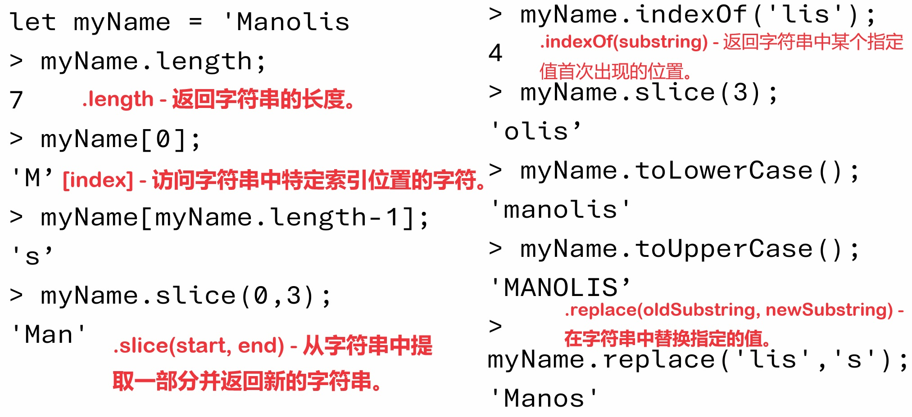

JavaScript是一种高级编程语言。 它与HTML和CSS一起构成了构建网站前端（front-end）的三大核心技术。HTML负责页面结构，CSS负责样式和布局，而JavaScript则添加了交互性。 所有现代浏览器都内置了JavaScript引擎，这意味着JavaScript代码可以在用户的设备上直接运行，无需任何编译步骤。 通过Node.js（一个运行于服务器端的JavaScript运行时环境），JavaScript也可以用于服务器端编程。 这意味着开发者可以使用同一种语言来编写前端和后端代码，这种“全栈”开发简化了学习曲线，并允许更快速的开发周期和更高的生产效率。
属性（Attributes and Properties）：
动态类型语言(Dynamically typed language)：这意味着在JavaScript中，变量的类型是在运行时决定的，而不是在编写代码时。这增加了语言的灵活性，但也需要开发者在编码时更加注意，以避免类型相关的错误。
弱类型语言(Weakly typed language)：在JavaScript中，不同类型的数据可以自由地进行转换，如把字符串转换为数字等。这种类型转换有时会自动发生，这既是一种便利，也可能导致意外的行为。
基于原型的对象(Prototype-based (objects))：JavaScript使用原型继承而不是传统的类继承。这意味着对象可以继承自其他对象，开发者可以创建一个对象作为另一个对象的原型，新对象可以继承原型对象的属性和方法。
多范式语言(Multi-paradigm language)：JavaScript支持多种编程范式，包括命令式、函数式和事件驱动编程，这使得JavaScript非常灵活，可以适用于多种不同的编程任务。
应用程序接口（API）：JavaScript提供了丰富的API，包括操作文本、数组的方法，以及操作HTML文档对象模型（DOM）的方法。这些API使得JavaScript能够创建动态的网页内容和丰富的用户界面。
不包括输入/输出模块(No I/O module)：JavaScript设计为运行在浏览器中，因此它不包括传统编程语言中常见的用于网络通信、文件操作或图形界面的I/O模块。尽管如此，通过浏览器提供的API或Node.js，JavaScript可以进行网络请求、访问文件系统等操作。
将JavaScript添加到HTML的方法：
1.内部JavaScript（Internal JavaScript）：将JavaScript代码直接写在HTML文档中的<script>标签内。这通常放在文档的<head>部分或者<body>部分的底部。 当脚本放在<head>里时，必须等到脚本执行完毕后，页面才会继续加载。这可能会导致页面加载速度变慢。为了避免阻塞页面渲染，推荐将脚本放在<body>标签的底部，这样HTML的其他部分可以在脚本加载和执行时先加载显示。
<head>
<script>
// JavaScript代码
<script>
<head>
2.外部JavaScript（External JavaScript）：将JavaScript代码写在外部文件中，然后通过<script>标签的src属性引入。这样做有助于保持HTML文档的清晰和易于管理，也方便脚本的重用。
async（异步脚本）属性：具有async属性的脚本会在被下载时不阻塞HTML的解析。一旦async脚本下载完成，它将尽快执行，这可能会在HTML文档完全解析完成之前。此时，HTML文档的解析会暂停，直到脚本执行完毕。这适合那些不依赖于其他脚本或文档内容的脚本。
defer（延迟脚本）属性：具有defer属性的脚本也不会在下载时阻塞HTML的解析。但所有defer脚本将在整个HTML文档解析完成后，'DOMContentLoaded'事件触发之前按照它们在HTML中出现的顺序执行。这对于那些需要在HTML完全解析后才能运行的脚本很有用。
<script src="path/to/your-script.js" async></script>
3.内联JavaScript(Inline JavaScript)：直接在HTML元素内通过事件属性（'onclick'、'onload'等）添加JavaScript代码。这种方法通常用于简单的交互。
<button onclick="alert('Hello, World!')">Click Me</button>
JS与用户交流实例（communication）：
1. console.log("Hello world!");
用途：在浏览器的控制台（Console）输出信息。这是开发者调试程序时常用的方法。
示例解释：这行代码会在浏览器控制台显示消息“Hello world!”。
2. window.console.error(“Error");
用途：在浏览器的控制台输出错误信息。与console.log类似，但通常用于指示错误或警告，且在控制台中通常以红色显示。
示例解释：这行代码会在浏览器控制台以错误信息的形式显示“Error”。
3. window.alert("Hello world!");
用途：弹出一个警告框，显示指定的消息，直到用户点击“确定”按钮后才会继续执行后续的JavaScript代码。
示例解释：这行代码会显示一个包含消息“Hello world!”的警告框。
4. alert("Hello world!");
用途：这是window.alert("Hello world!");的简写形式，因为alert方法实际上是window对象的一个方法，而在浏览器中，window对象是全局作用域，所以可以直接调用其方法。
示例解释：效果与直接使用window.alert相同，显示一个警告框。
5. window.prompt("Are you feeling ok");
用途：弹出一个对话框，要求用户输入，可以提供一个字符串作为用户的提示信息，用户可以在输入框中输入文字，并通过点击“确定”提交输入的内容，或点击“取消”来拒绝输入。
示例解释：这行代码会显示一个对话框，上面有消息“Are you feeling ok”，并且提供一个输入框给用户输入回答。
JS引擎（JavaScript engines）：
现代浏览器为了呈现网页和执行JavaScript代码，通常启动两个主要的进程：渲染引擎和JavaScript引擎。
渲染引擎（Rendering Engine）:
职责：渲染引擎负责解析HTML和CSS，并将解析的内容显示在屏幕上。这包括处理网页的结构、布局、以及样式等信息，最终生成用户可视化看到的网页。
工作流程：当你访问一个网站时，渲染引擎开始工作，首先解析HTML文档构建出DOM树，然后解析CSS样式信息（包括外部CSS文件和页面内的样式）。解析完成后，渲染引擎将DOM和CSS信息结合，构建渲染树，最后根据渲染树来绘制页面。
JavaScript引擎（JavaScript Engine）:
职责：JavaScript引擎负责执行页面上的JavaScript代码。这包括处理事件监听、修改DOM、发送网络请求等操作，通过这些操作可以实现页面的动态交互效果。
解释执行 vs JIT编译：虽然JavaScript通常被认为是一种解释型语言（意味着代码在执行时逐行解释运行），现代浏览器的JavaScript引擎通常使用Just-In-Time (JIT) 编译技术来提高执行效率。JIT编译器会在JavaScript代码执行时将其编译成机器码，这样可以大幅提升运行速度。
JIT编译(Just-in-time compiler)技术:
原理：JIT编译技术结合了解释器和传统编译器的优点。它不是在代码执行前将全部代码编译成机器码，也不是逐行解释执行，而是将代码编译成字节码（一种介于源码和机器码之间的代码），在执行时根据需要将热点代码（即经常执行的代码）编译成机器码。
优势：通过JIT编译，可以实时优化代码执行，提高执行效率，尤其是在处理复杂和计算密集的JavaScript应用时表现明显。
DOM树(Document Object Model tree)
Document Object Model (DOM) 树是一个编程接口（API），它将网页文档表示为一个树状结构。每个节点代表文档中的一个部分，如元素、属性和文本。DOM允许程序和脚本动态访问和更新文档的内容、结构和样式。
DOM树的结构
节点（Nodes）：DOM树中的每一个点都是一个节点。最常见的节点类型有：
元素(Element)节点：代表HTML文档中的标签，如<div>、<p>、<a>等。
文本(Text)节点：包含元素内的文本。
属性(Attribute)节点：包含元素的属性，如class="example"或href="url"。
根节点：在HTML文档中，根节点是<html>元素，它是DOM树的顶端起点。
父节点（Parent Node）：包含其他节点的节点。
子节点（Child Nodes）：被父节点包含的节点。
兄弟节点（Sibling Nodes）：拥有相同父节点的节点。
DOM的作用
页面动态交互：通过使用JavaScript来操作DOM，开发者可以在不刷新页面的情况下，动态地添加、删除、修改页面的内容和结构。这使得网页可以响应用户的操作，如点击按钮添加列表项、提交表单后显示消息等。
访问和修改：DOM提供了许多方法和属性，使得开发者可以方便地访问和修改DOM树的节点。例如，document.getElementById()可以获取特定ID的元素，element.innerHTML可以修改元素内的HTML内容。
事件监听器（EventListener）：
JavaScript HTML DOM中的事件监听器（EventListener）是一种机制，允许你监听在文档或文档中的元素上发生的特定类型的事件（如点击、键盘按键、鼠标移动等），并定义当这些事件发生时应该执行的动作（即事件处理函数）。
你可以使用addEventListener方法来为元素添加事件监听器:
element.addEventListener(event, function);
element：要添加监听器的DOM元素。
event：一个字符串，表示监听的事件类型（如"click"、"keydown"等）。
function：事件发生时调用的函数。
window.onload
onload事件是在HTML文档加载完成后执行JavaScript代码的一种方法,这样做的目的是为了防止JavaScript代码在HTML元素完全加载之前运行，因为那样可能导致无法正确访问或操作那些元素。
当使用window.onload时，它会等到整个页面完全加载后才执行代码，这包括所有的HTML、样式表（CSS）、脚本（JavaScript）、以及图片和其他资源。而<script>标签中的defer属性不会等待像图片这样的资源加载完成，只需等待HTML解析完成。
onload事件可以绑定到window对象，确保在整个页面加载完成后执行某些操作。
<!DOCTYPE html>
<html>
<head>
<title>Document Load Example</title>
</head>
<body onload="alert('HTML加载完成！');">
<!-- 页面内容 -->
</body>
</html>
同样，也可以在JavaScript中绑定onload事件，而不是直接在HTML标签上使用。
<!DOCTYPE html>
<html>
<head>
<title>Document Load Example</title>
<script>
window.onload = function() {
// 在这里写你的代码
alert('HTML加载完成！');
};
</script>
</head>
<body>
<!-- 页面内容 -->
</body>
</html>
在这两个例子中，当整个HTML页面加载完成时，会弹出一个警告框提示“HTML加载完成！”。这证明了onload事件是在页面加载完毕后触发的。
同步脚本与异步脚本 （Synchronous(Parser-Blocking Scripts) and Asynchronous Scripts）：
Synchronous Scripts：
当HTML解析器遇到<script>标签时，它会停止解析后续的HTML，转而去加载并执行这个脚本。这个过程会一直持续到脚本执行完毕，之后HTML解析器才会继续解析剩余的文档。这种行为导致了脚本成为了解析器的阻塞点，因此这类脚本被称为"Parser-Blocking Scripts"或"同步脚本"。

Asynchronous Scripts： 通过异步方式加载和执行的JavaScript代码。这意味着这部分代码的加载不会阻塞浏览器的HTML解析器。可通过在标签中添加async属性等方法实现。
变量（Variable）
命名
变量名可以包含字母（a-z，A-Z），数字（0-9），下划线（_）和美元符号（$）。但是，变量名不能以数字开头。
变量名不能使用JavaScript的保留字。保留字包括语言中已经被使用的词，如for、if、let、var、return、function等。
JavaScript是区分大小写的语言。这意味着，variableName和VariableName被视为两个不同的变量。
命名时使用let或const关键字意味着变量有块级作用域（Block Scope），即这个变量只在声明它的块或for-loop内部可见。(一个“块”是由一对大括号{}包围的一段代码。)
命名时使用var关键字意味着变量有函数作用域（Function Scope）或全局作用域，如果它不在任何函数内部被声明的话。(函数作用域是指声明在函数内部的变量只能在该函数内部被访问。这些变量对于函数外部是不可见的。)
typeof运算符：
typeof运算符在JavaScript中用于确定一个变量或表达式的类型。它是一种一元运算符，返回一个表示操作数类型的字符串。typeof对于调试和确保变量包含预期类型的值非常有用，尤其是在JavaScript这种弱类型语言中。
用例：
let x= 10;
console.log(typeof x);
>number
字符串（String）:
在JavaScript中，字符串是存储文本信息的数据类型，可以使用单引号(')、双引号(")或反引号(```)来声明字符串。这些方式在大多数情况下是等效的。 单引号和双引号在JavaScript中的行为基本相同，主要的区别在于如何在字符串中表示引号。如果字符串内部需要包含一个单引号，可以使用双引号来声明字符串，反之亦然。 如果要在字符串内部使用和字符串相同的引号类型，那么需要使用反斜线(\)来转义。在下面的例子中，\'用来在双引号字符串内包含一个单引号，不会被解释为字符串的结束。
let example = "I\'m feeling lucky";
使用+运算符可以将两个或多个字符串拼接（连接）成一个新的字符串。
let one = "Hello";
let two = " world!!!";
let concatenation = one + two; // "Hello world!!!"
常用字符串方法（String methods）：

数组（Array）：
数组是一种特殊类型的对象，用于存储多个值。这些值可以是任何类型，包括字符串、数字、布尔值、对象，甚至是其他数组。
数组中的元素可以通过索引（Index）访问，索引是从0开始的数字。
使用方括号[]来创建一个数组，并且可以在方括号内放入初始元素，元素之间用逗号,分隔。
let variety = ['one', 7896, [0, 1, 2]];
variety是一个混合类型的数组，它包含一个字符串'one'，一个数字7896，以及另一个数组[0, 1, 2]作为元素。
函数（Function）：
在JavaScript中，每个函数包含一组按逻辑顺序排列的指令，以便总是实现一个特定的结果。对于JavaScript中的函数：
• 每个函数都必须有一个具体且唯一的名称（例如，myFunction）。
• 命名函数的规则与命名变量的规则相同。
• "function"这个词必须在函数名称之前（例如，function myFunction）。
• 每个函数名称后面都跟着一对括号（例如，function myFunction()）。
• 每个函数的指令集都包含在大括号{}内（例如，function myFunction() { ... }）。
• 函数参数可以包含在括号内，参数的数量可以是0个、1个或多个。
• 每个函数通过其名称被调用（例如，myFunction()）。
• 当函数通过其名称被调用时，函数内的指令会被执行。
• 每个函数可以在脚本中被多次调用。
• 一个HTML文档可以包含多个函数。
• 所有的函数都包含在<script>和</script>标签内，或者插入代码的其他地方。
条件与循环（Condition and Loop）
条件语句有if语句，if...else语句，if...else if...else语句和switch语句等。
循环语句有for循环，while循环，do...while循环，for...in循环和for...of循环等。其中：
for...in循环用于遍历对象的属性。
for...of循环用于遍历可迭代对象（如数组、字符串等）的值。
const object = { a: 1, b: 2, c: 3 };
for (const property in object) {
console.log(property + ": " + object[property]);
}
// 输出：
// a: 1
// b: 2
// c: 3
const array = ['a', 'b', 'c'];
for (const element of array) {
console.log(element);
}
// 输出：
// a
// b
// c
Cookie:
在JavaScript中，Cookie是一种小型文本文件，它被存储在用户的计算机上，并且以name=value对的形式包含数据。例如：visitor=vist123。Cookie主要用于存储用户或访问者的信息，比如用户的偏好设置或登录状态。
写入和读取Cookie:
写入Cookie：使用document.cookie可以写入或存储Cookie到用户的机器上。当你设置document.cookie时，你实际上是在添加一个新的Cookie，或者更新一个已存在的Cookie的值。
读取Cookie：同样地，通过访问document.cookie，你可以读取存储在用户机器上所有的Cookie，它们以一个长字符串的形式返回，其中每个name=value对之间用分号加空格分隔。
Cookie的参数:
expires：指定了Cookie的过期时间。如果没有设置，Cookie将在浏览器关闭时过期。你可以设置一个具体的日期和时间，让Cookie在未来的某个时间点过期。
path：指定了Cookie有效的路径。默认情况下，Cookie对当前路径及其子路径有效。通过设置路径，你可以限制Cookie只对网站的某部分有效。
domain：定义了网站的哪部分可以访问Cookie。默认情况下，只有创建Cookie的网页才可以访问该Cookie。
secure：标记该Cookie仅通过安全的HTTPS连接发送。
创建Cookie的示例函数:
function createCookie(name, value, days) {
var expires = "";
if (days) {
var date = new Date();
date.setTime(date.getTime() + (days * 24 * 60 * 60 * 1000));
expires = "; expires=" + date.toUTCString();
}
document.cookie = name + "=" + value + expires + "; path=/";
}
这个函数允许你创建一个新的Cookie，并可选地设置它的过期时间（以天为单位）。
隐私问题(Privacy concerns):
追踪（Tracking）：通过Cookie或其他追踪技术收集用户的浏览习惯和行为信息。
用户画像（Profiling）：根据收集的数据对用户进行分类和画像，以便更精准地投放广告或内容。
数据收集（Data Collection）：网站和广告商收集用户信息，包括个人身份信息和浏览活动。
第三方与第一方Cookie：第一方Cookie由用户直接访问的网站设置，通常用于记住登录状态和用户偏好。第三方Cookie由广告商和分析服务设置，用于跨网站追踪用户行为。
如何保护(How to protect):
浏览器隐私设置：私人浏览模式，Cookie阻止，第三方Cookie限制。
Cookie阻挡器、扩展或浏览器：使用特定的扩展程序或浏览器可以帮助阻止追踪器和Cookie。例如，广告拦截器、隐私保护扩展等。
使用Tor匿名化：Tor浏览器可以帮助用户匿名浏览互联网，通过其网络隐匿用户的真实IP地址。但需注意，尽管Tor提供了较高级别的匿名性，它并非100%安全。
使用Tails操作系统：Tails是一个可启动的操作系统，旨在保护用户免受监视和身份泄露。它通过Tor网络和一系列隐私工具来保护用户。
向对象编程（OOP）:
JavaScript语言是基于面向对象的基础上设计的。通过面向对象编程（OOP），开发者可以：
• 创建自己的对象，并通过使代码更加灵活和可维护来更好地组织代码。
• 使用JavaScript提供的预制内置对象（如JSON、Date、Math）。
• 我们使用OOP来模拟或更好地描述现实世界的例子。
• 对象可以包含数据或方法。通过对象，我们将数据及其行为整合到一个代码块中。
• 对象可以相互交互。
• 我们可以使用API方法来访问和与对象通信。
JSON
JSON（JavaScript Object Notation）是一种轻量级的数据交换格式。它易于人阅读和编写，同时也易于机器解析和生成。
JSON是完全独立于语言的文本格式，但它使用了类似于JavaScript对象字面量的约定，这使得JSON在Web开发中非常流行，特别是在进行数据的传输和存储时。
JSON的特点：
文本形式：JSON是基于文本的，可以被任何编程语言读取和作为数据格式交换。
易于读写：JSON的格式清晰简洁，人类可读性高。
键值对：JSON数据是通过键值对来表示的，每个键后面跟着一个值，键值对之间由逗号分隔。
支持数据类型：JSON支持多种数据类型，包括数字、字符串、布尔值、数组、对象和null。
处理JSON
JavaScript提供了JSON.parse()和JSON.stringify()两个方法来解析JSON字符串和将JavaScript对象转换为JSON字符串。
解析JSON字符串：
const obj = JSON.parse('{"name":"John", "age":30, "city":"New York"}');
将JavaScript对象转换为JSON字符串：
const myJSON = JSON.stringify({name: "John", age: 31, city: "New York"});
异步JavaScript和AJAX
异步JavaScript指的是在不阻塞主线程执行流程的情况下执行长时间运行的任务（如网络请求、文件操作等）的能力。JavaScript是单线程语言，意味着在同一时间只能执行一个任务。
为了解决这个限制，JavaScript提供了几种处理异步操作的机制，包括回调函数、Promise对象以及async/await语法。
AJAX
AJAX（Asynchronous JavaScript And XML）是一种在Web开发中使用的技术，允许Web页面与服务器异步通信，这意味着可以在不重新加载整个页面的情况下请求、接收和发送数据。
这种技术极大地提高了用户体验，使得Web应用程序可以快速响应用户的操作。
AJAX通过使用XMLHttpRequest对象（或在现代浏览器中使用fetch API）与远程Web服务器进行通信。开发者可以使用这些技术发出HTTP请求，以获取或发送数据。
实例：